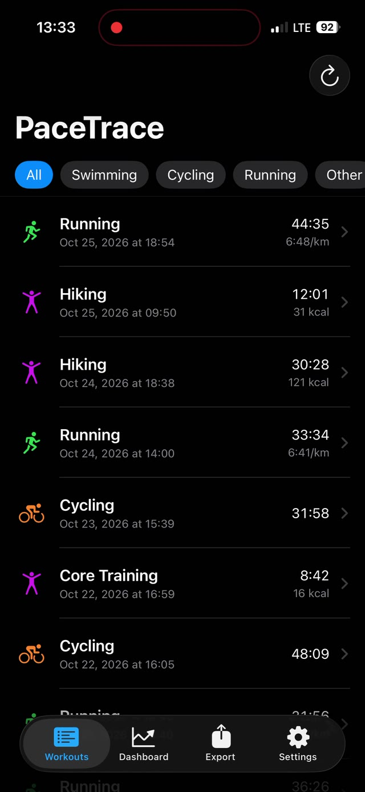
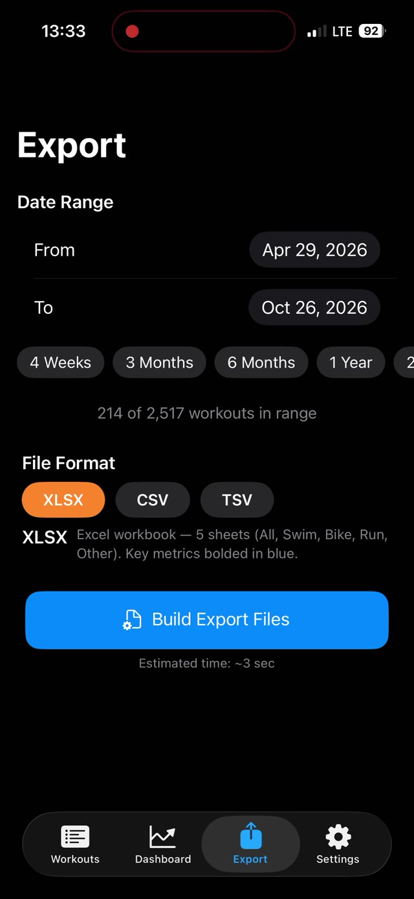
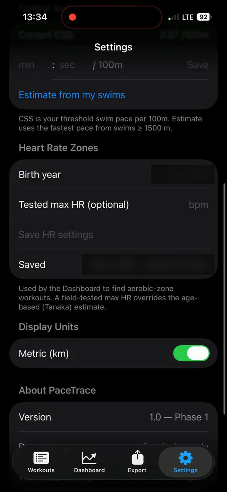

App Development - PaceTrace
// designer & developer //
A triathlon fitness app that reads your exercise history and tells you whether you’re improving, declining, or holding steady.
Why I built it
I created PaceTrace because I couldn’t find a good way to track fitness performance over time for triathlon. TrainingPeaks, which many triathlon coaches use, offers performance insights called “fitness, form, and fatigue,” and I found them vague and hard to act on.
I wanted an app that turns your own exercise history into fitness insights, using the same kinds of metrics a triathlon coach would, so you can see whether you are improving, declining, or holding steady over time.
how it works
PaceTrace reads workouts from Apple Health and compares your recent training with the period before it, one sport at a time.




dashboard
Each sport gets a trend card with a clear label: improving or declining. Running and cycling use an efficiency factor, which is speed per heartbeat on aerobic-zone sessions. Swimming tracks pace per 100 m, and hiking tracks heart rate on comparable climbs. The time range runs from one month to all time.
workouts, export, and settings
Every workout from Apple Health appears in one list, with filters for each sport. You can export a date range as XLSX, CSV, or TSV; the Excel workbook has five sheets: All, Swim, Bike, Run, and Other. Settings hold your critical swim speed, power threshold, and heart rate zones, which the dashboard uses to find your aerobic-zone workouts.